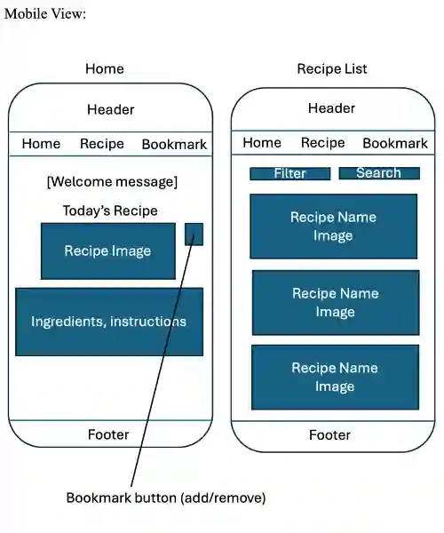

Site Name
Find Your Meal: Recipe Library
・This site provides many kind of recipe for anyone who loves to cook.
Site Purpose
This website contains many kinds of recipe including image, ingredients, detailed instruction.
When you have specific meal you want to make, we give the recipe.
When you are not sure what to make, we suggest something.
Senario
・Where can I find the recipe?
・What should I cook for dinner?
Color Schema
Here is the color schema for this project.
・Primary Color: #E2D4B7
・Secondary Color: #9C9583
・Accent Color: #B0BBBF
・Accent Color2: #CADBC8
Typography
Heading Font: Oswald
Pragraph Font: Source Sans 3
Wireframe
